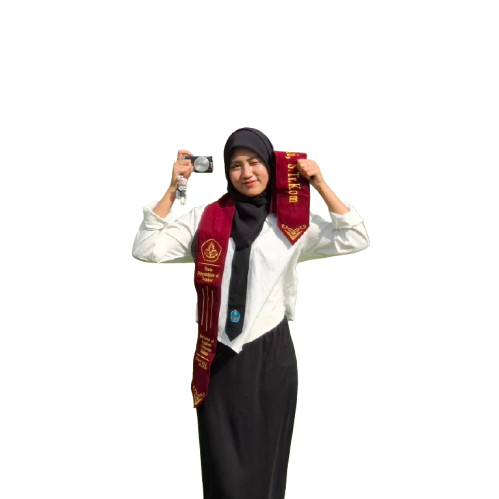
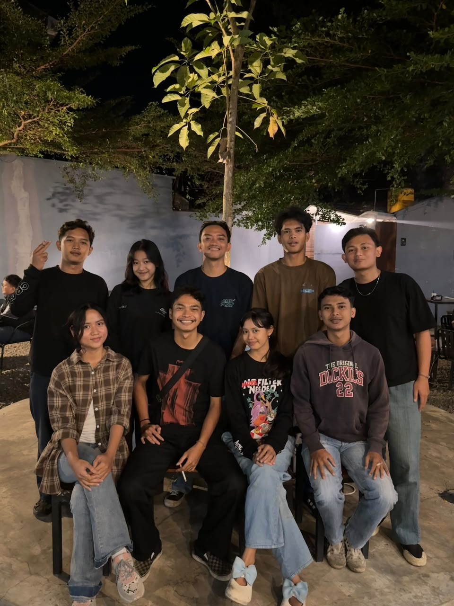
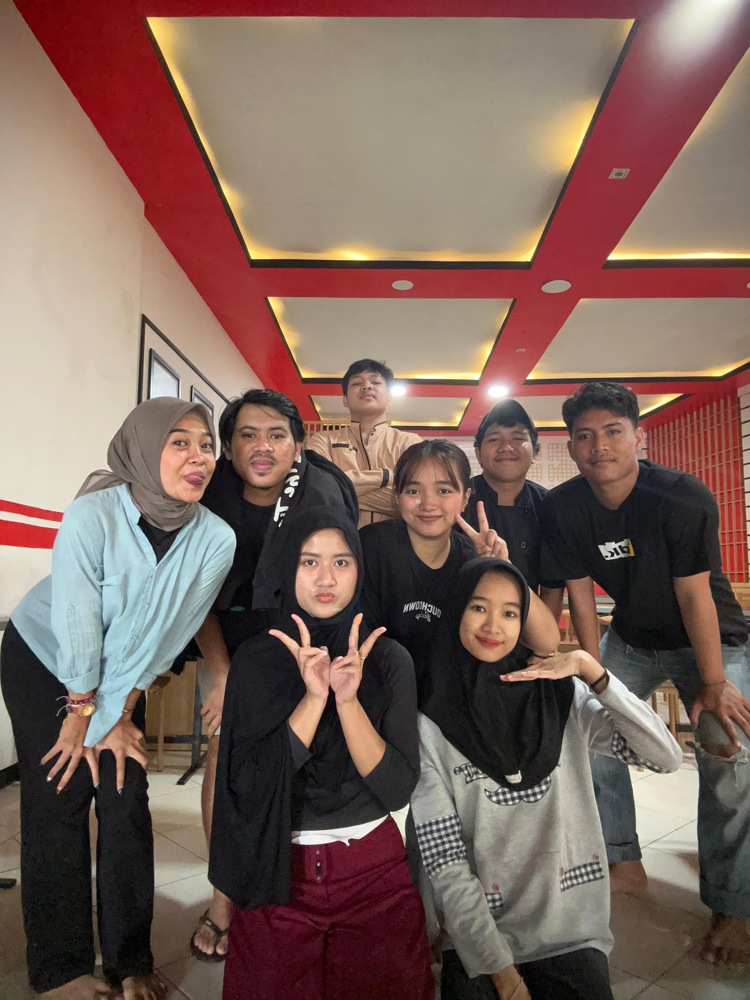

2022–2026
D4 Teknik Informatika
Politeknik Negeri Jember · Jurusan Teknologi Informasi
3,82IPK / 4,00
IT Project Management ✦ IT Governance ✦ IT QA ✦ Human Resources ✦ Professional Communications

Profil singkat dan perjalanan yang membentuk cara saya bekerja.
Politeknik Negeri Jember
2022–2026
Lulusan D4 Teknik Informatika Politeknik Negeri Jember dengan IPK 3,82. Memiliki ketertarikan pada bidang IT Governance, Manajemen Proyek TI, Human Resources, serta komunikasi profesional. Memiliki pengetahuan dasar mengenai Tata Kelola Teknologi Informasi dan framework COBIT yang diperoleh selama perkuliahan, serta pengalaman dalam pengembangan aplikasi hingga tahap pengujian, baik manual testing maupun automation testing serta penerapan ISO 9126. Selain itu, memiliki pengalaman memimpin proyek sebagai IT Project Manager Intern selama menjalani magang kuliah.
Di luar bidang teknologi informasi, saya memiliki pengalaman dalam administrasi organisasi himpunan mahasiswa prodi sebagai Sekretaris Utama, serta komunikasi interpersonal dan public speaking dengan aktif sebagai Master of Ceremony (MC) dalam berbagai acara kampus, dan pelayanan pelanggan dengan pengalaman bekerja di industri F&B sebagai kasir dan waitress yang melibatkan interaksi langsung dengan pelanggan, serta operasional bisnis.
Berbagai pengalaman linier dan lintas bidang tersebut membentuk kemampuan saya dalam berpikir analitis, mengelola dokumentasi, berkoordinasi dengan berbagai pihak, serta beradaptasi dan berinteraksi langsung dengan berbagai karakter individu, sehingga siap mengembangkan kompetensi serta berkontribusi dalam bidang Tata Kelola TI maupun hubungan industrial dan operasional sumber daya manusia.
Politeknik Negeri Jember · Jurusan Teknologi Informasi

SMKN 2 Pasuruan
Pengalaman akademik, organisasi, dan kerja yang membentuk kompetensi lintas bidang.
Memimpin pengembangan perpustakaan digital untuk pengelolaan koleksi buku dan pemantauan literasi siswa serta guru. Membagi dan memantau tugas melalui Trello, menerapkan Agile Scrum, serta mengoordinasikan penyelesaian kendala.
Mengembangkan sistem monitoring nutrisi hidroponik berbasis IoT dan visualisasi objek 3D. Mengintegrasikan ESP32, sensor TDS dan ultrasonik, MQTT, serta menguji integrasi perangkat dan aplikasi.
Mengelola pengembangan aplikasi belajar pemrograman, pembagian tugas, koordinasi Scrum, dan pemantauan progres menggunakan Trello.
Menyusun skenario dan test case Black Box, menguji fungsi aplikasi, mendokumentasikan temuan, dan menggunakan ISO 9126 sebagai acuan evaluasi kualitas.
Meninjau kebutuhan aplikasi, menyusun Product Backlog Item, mengatur prioritas dan memantau progres tim dengan Trello dan pendekatan Scrum.
Mengelola administrasi, surat-menyurat, pengarsipan dokumen, koordinasi pengurus, serta jadwal rapat rutin.


Memandu acara, memperkenalkan pembicara dan tamu, berkoordinasi dengan panitia, serta menjaga interaksi audiens dan kelancaran transisi acara.


Dokumentasi proses, hasil, dan kolaborasi dari proyek perkuliahan serta magang.
Aplikasi monitoring nutrisi hidroponik selada berbasis data sensor IoT dengan analisis perbandingan Fuzzy Mamdani dan Sugeno untuk klasifikasi status nutrisi.


Aplikasi untuk mendukung pengelolaan salesman dan barang toko. Berkontribusi dalam koordinasi proyek, komunikasi stakeholder, pemantauan tugas, dan tindak lanjut bug hingga serah terima.
Dokumentasi proyek dilindungi oleh PT. Wesclic Indonesia Neotech.
Perpustakaan digital dan pemantauan literasi siswa serta guru. Mengelola koordinasi tim dengan Agile Scrum dan Trello.
Monitoring nutrisi hidroponik dengan visualisasi 3D, integrasi ESP32, sensor TDS dan ultrasonik, serta komunikasi MQTT.
Aplikasi pembelajaran coding dan kursus online. Mengelola koordinasi tim, pembagian pekerjaan, dan progres dengan Trello dan Scrum.
Aplikasi penjualan makanan ringan pedas. Menguji fitur melalui Black Box Testing dan mengevaluasi kualitas perangkat lunak dengan acuan ISO 9126.
Aplikasi manajemen toko kelontong. Menyusun Product Backlog Item, mengatur prioritas, dan berkoordinasi dengan pendekatan Scrum.
Kompetensi yang dikembangkan melalui kuliah, proyek, organisasi, dan pengalaman kerja.
Sertifikasi, pelatihan, dan apresiasi dari perjalanan akademik.
Badan Nasional Sertifikasi Profesi
UPA Bahasa Politeknik Negeri Jember
Penghargaan aplikasi terbaik.
Penghargaan video aplikasi terbaik.
Pelatihan Agile Scrum untuk manajer pengembangan produk.

Penghargaan aplikasi terbaik.
Terbuka untuk berdiskusi, berkolaborasi, dan mengembangkan peluang profesional. Hubungi saya melalui kanal berikut.